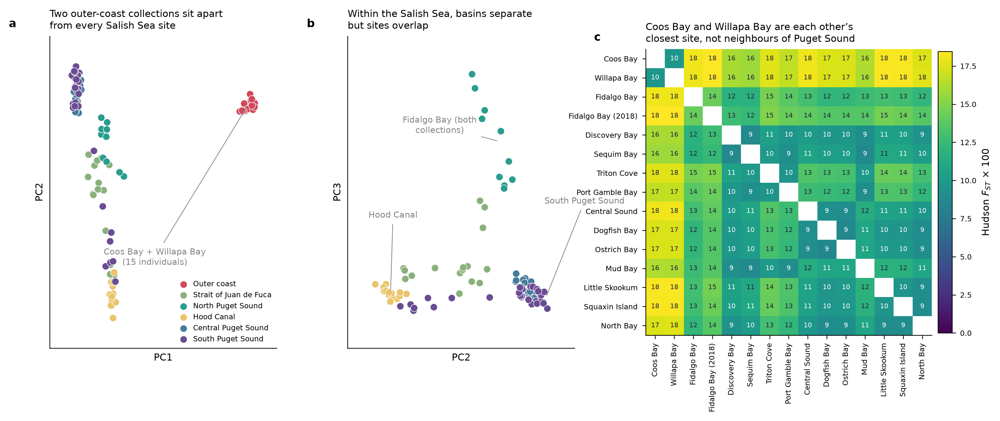

![]()
Summary
Neutral population structure in this dataset is real, strong and easy to describe: two outer-coast collections (Coos Bay, Oregon and the site recorded as “WB”) form one cluster that sits far from everything in the Salish Sea, and within the Salish Sea the basins — Hood Canal, South Sound, North Sound, the Strait — separate on later axes while individual sites inside a basin overlap. Genome-wide Hudson FST averages 0.115 among the 13 Salish Sea collections and 0.174 between either outer-coast collection and the Salish Sea.
The one site that forced a change of interpretation is “WB”. It was carried in the repository as Westcott Bay, San Juan Island. Genetically it is not a Puget Sound population: its closest relative in the dataset is Coos Bay (FST = 0.097), closer than the average pair of Salish Sea sites (0.115). Read as Willapa Bay — an outer-coast estuary — the pattern is ordinary.
A chromosome-scale assembly (PO2457) is now available, and this post also asks what it does and does not change for these results. Short version: it does not change the structure, because structure is a property of the samples rather than the coordinate system. What it changes is what we know about the markers. Of the 7.65 M SNPs that could be placed on the new assembly, 38.7 % fall inside repeat-masked intervals that the old fragmented reference gave us no way to identify — and every FST and PC below was computed with those markers included.
The genotype–environment work on this dataset is written up separately (see the GEA analysis); nothing here depends on it.
Question
Two practical questions sit underneath any restoration sourcing decision, and they are different questions:
- Are these collections genetically distinguishable, and how are they arranged? That is this post.
- Do those differences track local conditions? That is the genotype–environment analysis, and it is negative.
Question 1 is also the quality-control pass for everything else. If the samples do not resolve into the groups the metadata claims, the metadata is the thing to fix first — which is exactly what happened.
Data
Low-coverage whole-genome sequencing of 112 libraries from 15 putative collection sites, 13 of them in Puget Sound and the Strait of Juan de Fuca, one on the outer Washington coast, one in Coos Bay, Oregon. Repository: github.com/zbengt/oly-lc-WGS; alignments and variants served over HTTP from a lab web host.
| libraries sequenced | 112 |
| retained after QC | 109 (2 blank controls, 1 below the depth threshold) |
| mean depth, retained | 5.48× (range 3.46–6.73) |
| individuals per site | 5–8 |
| genotype missingness | mean 3.1 %, max 13.6 % (HC18_Triton_Wild_16) |
Two collections — Fidalgo_Bay and FB18_Wild — carry identical coordinates (48.488, −122.576) and are treated as separate populations throughout, because the records do not establish that they are the same collection event. Three site labels besides WB (CS18_22_Wild_plate1, LS, MB) are inferred from sample naming rather than read from collection records.
Variants
Genotypes come from the joint VCF’s likelihoods. Filtering with bcftools: biallelic SNPs, QUAL ≥ 30, MQ ≥ 30, F_MISSING < 0.2, MAF 0.05–0.95, plus an excess-heterozygosity screen (ExcHet > 1e−6) as a paralog guard.
| stage | SNPs |
|---|---|
after bcftools filters |
14,250,907 |
| dropped — excess depth | 14,250 |
| dropped — missing in a population | 1,903 |
| dropped — MAF < 0.05 | 1,376,098 |
| retained | 12,858,656 |
| thinned subset used for PCA | 174,534 |
Population allele frequencies pool sequencing reads within a site (summed ALT depth over summed total depth) rather than averaging per-individual hard calls, which at ~5× would be biased toward homozygotes. Individual dosages are flat-prior posteriors from the PL fields, so depth uncertainty is carried forward into the PCA rather than hidden by a call.
Methods
Ordination. PCA on individual dosages, LD-thinned to 174,534 SNPs, all 109 individuals, no outlier removal. The scores shown are from the genome-wide run.
Differentiation. Hudson’s FST per population pair, computed from the pooled read counts described above and averaged over all 12,858,656 SNPs using the ratio-of-averages estimator (sum of numerators over sum of denominators, not the mean of per-SNP ratios).
Relatedness. A genetic relationship matrix and IBS from 39,066 thinned SNPs (the earlier subset-era run; not repeated genome-wide), with kinship evaluated within sites (349 within-site pairs) against a within-site null, since across-site kinship is confounded with the structure we are trying to describe.
Seeds fixed at 42; the pipeline is scripted end to end (see Reproducibility).
Results
The ordination has one dominant split and a basin-level second tier

PC1 separates Coos Bay + Willapa Bay (15 individuals) from the 94 Salish Sea individuals; the gap between the two groups is 13.0 pooled standard deviations, and the two outer-coast collections are not resolved from each other on it (site means 190.1 and 202.8, against a within-group SD of 7.2).
The later axes are basin-level, not site-level:
| axis | what it separates | site means at the extremes |
|---|---|---|
| PC2 | Hood Canal from South Puget Sound | Triton Cove −124.3, Port Gamble −118.9 · Little Skookum +64.5, Squaxin +63.4 |
| PC3 | the Fidalgo Bay collections from everything else | FB18 Wild +180.3, Fidalgo Bay +101.9 · Mud Bay −31.4 |
Per-axis variance fractions were not carried back from the genome-wide run; on the earlier 918,481-SNP subset PC1 and PC2 took 2.9 % and 2.1 %, with the remaining axes at or below a 1/109 noise floor. Low fractions are normal for this kind of data and do not argue against the split — the separation of the outer-coast cluster is what carries the signal, not the share of total variance on the axis.
Differentiation
Genome-wide Hudson FST, 105 pairs:
| comparison | FST |
|---|---|
| Coos Bay ↔︎ Willapa Bay | 0.097 |
| among the 13 Salish Sea sites (mean) | 0.115 (range 0.086–0.150) |
| Coos Bay ↔︎ Salish Sea (mean) | 0.174 (range 0.157–0.184) |
| Willapa Bay ↔︎ Salish Sea (mean) | 0.174 (range 0.157–0.185) |
| all pairs (mean) | 0.129; max 0.185 (FB18 Wild ↔︎ Willapa Bay) |
The closest pair in the dataset is Dogfish Bay ↔︎ Ostrich Bay (0.086), two Central Puget Sound sites 13 km apart. The most differentiated Salish Sea pair is FB18 Wild (Fidalgo Bay, north) ↔︎ Triton Cove (Hood Canal) at 0.150.
The two Fidalgo Bay collections differ at FST = 0.143 — above the Salish Sea average, from collections recorded at the same coordinates. Either they are separate collection events from genuinely different beds, or one label is wrong, or a batch effect is being read as differentiation. This is unresolved and it is the second metadata problem the genetics surfaced.
Absolute FST values are provisional; the earlier subset understated them by half
The first pass used the 1,200 highest-variant-density contigs (7.4 % of the VCF’s records). That subset gives systematically lower differentiation than the genome:
| 7.4 % subset | genome-wide | |
|---|---|---|
| Coos Bay ↔︎ Willapa Bay | 0.038 | 0.097 |
| among the 13 Salish Sea sites (mean) | 0.052 | 0.115 |
| Fidalgo Bay ↔︎ FB18 Wild | 0.051 | 0.143 |
Selecting contigs for variant density selects regions where variation is high and shared — including, most likely, collapsed paralogs, where reads from two loci pile onto one and every population looks heterozygous and therefore similar. Any FST quoted from that subset is a floor, not an estimate.
That is a warning about the genome-wide numbers too. They are computed from pooled read counts at 5.5× on a 158,839-contig reference with no repeat mask, using a ratio-of-averages estimator that is unbiased under its assumptions but not immune to reference collapse. Treat the ordering of the pairs as solid and the absolute magnitudes as an upper-bounded guess.
The relabelled site
The site recorded as “WB” was inferred in the repository to be Westcott Bay, San Juan Island. Three independent readings of the data say otherwise: it clusters with Coos Bay on PC1 with no separation between them, its FST to Coos Bay (0.097) is lower than the average Salish Sea pair (0.115), and its mean FST to the Salish Sea (0.174) is the same as Coos Bay’s (0.174) — that is, it is as foreign to Puget Sound as an Oregon population is.
Reinterpreting it as Willapa Bay, an outer-coast Washington estuary between Coos Bay and the Strait, makes all three ordinary: two outer-coast populations resembling each other more than either resembles the inland sea.
This is not only bookkeeping. The label determines which environmental record a site inherits, and it also determines whether the dataset contains one outer-coast lineage or two. For a restoration audience the practical reading is that the Willapa/Coos group is a separate genetic unit from Puget Sound stock at a magnitude (FST ≈ 0.17) that dwarfs any within-Sound contrast — which is a sourcing-relevant fact regardless of whether local adaptation can be demonstrated.
Where the chromosome-scale assembly enters
A Dovetail HiRise Hi-C assembly of O. lurida (PO2457) with MAKER annotation is now in hand:
| property | Olurida_v081 (used for everything above) |
PO2457 |
|---|---|---|
| total length | 1.140 Gb | 1.023 Gb |
| sequences | 158,839 contigs | 145 scaffolds |
| N50 | 13.0 kb | 103.0 Mb |
| sequences ≥ 10 Mb | 0 | 10, holding 98.7 % |
| gene annotation | none usable | 34,178 genes |
| repeat annotation | none | 61.2 % masked |
| BUSCO (mollusca) | not assessed | C 80.1 %, M 17.4 % |
O. lurida has n = 10, so those ten large scaffolds are chromosomes.
What it does not change. None of the results above. PCA and FST are functions of the genotype matrix; renaming and reordering the coordinates of the markers leaves both invariant. A new assembly could only change these results by changing which reads map where — i.e. by realignment, not lift-over.
What it tells us about the markers we used. Lifting the SNP set onto the new scaffolds with minimap2 -cx asm20:
| stage | SNPs |
|---|---|
| entering lift-over | 12,710,660 |
| placed on the new assembly | 7,650,471 (60.2 %) |
| dropped — old contig had no alignment | 742,509 |
| dropped — position outside an alignment block | 4,317,680 |
| of those placed, inside a RepeatMasker interval | 2,957,241 (38.7 %) |
Nearly two in five placeable markers sit in repeat. Those markers were in every FST and PC above, because the old reference offered no way to exclude them. That is the most likely single explanation for differentiation values that look high for a broadcast-spawning marine invertebrate at this spatial scale.
The assembly-size difference points the same way: the old reference is 117 Mb larger than the new one despite being the same genome, the signature of unresolved haplotig redundancy, and only 48.4 % of it is covered at ≥ 1× despite 5.48× mean depth — coverage is piling into a fraction of the reference.
What this does and does not mean
Supported. Two genetic groups are unambiguous: outer coast (Coos Bay, Willapa Bay) and Salish Sea. Within the Salish Sea, basin-level differentiation is detectable and consistent across PCA and FST, and site-level differences inside a basin are small. Relatedness and sample QC do not account for any of it.
Not supported. Any absolute statement about the magnitude of differentiation, any site-level (as opposed to basin-level) ranking of distinctiveness, and any claim that structure reflects adaptation rather than drift and limited dispersal. The last of those was tested directly and failed.
Not assessed here. Isolation by distance (no Mantel or MRM test was run), admixture proportions, effective population size, and any within-chromosome pattern — the last of which the old reference made impossible and the new one makes routine.
What would sharpen this
| buys | cost | |
|---|---|---|
| Recompute FST and PCA with repeat-masked positions dropped, using the existing lift-over | a direct measure of how much of the apparent differentiation is repeat-driven; no realignment needed | low — one pass over existing files |
| Resolve the two Fidalgo Bay collections in the collection records | removes a 0.143 FST anomaly that is currently unexplained | archival |
| Confirm the WB collection’s provenance from records | settles the relabelling with evidence rather than inference | archival |
| Realign all 224 fastq files to PO2457 | genotypes free of the collapsed-contig problem, plus chromosome-anchored windowed FST, LD decay and inversion scans | ~1–2 days wall, ~1.5 TB scratch |
The first row is the highest ratio of information to effort in this table and should come next.
Notes to self
- Population structure is coordinate-free; marker quality is not. The instinct to re-run structure “on the new genome” is wrong unless the reads are re-mapped. What the new genome actually bought here was a repeat mask and a way to count how much of the marker set is suspect.
- Check subset-versus-genome differentiation before quoting any FST. The variant-density subset halved every value. It was chosen for transfer speed, and it turned out to be non-neutral with respect to the statistic.
- Pool reads for population frequencies; never average hard calls. At 5.5× the calls are homozygote-biased and the bias is depth-dependent, so it varies across sites.
- Evaluate kinship within sites, against a within-site null. Across-site kinship is the structure being measured; using it as a relatedness screen would flag whole basins.
- Two collections sharing coordinates are not evidence that they are one collection. Keeping
Fidalgo_BayandFB18_Wildseparate is what surfaced the 0.143 anomaly; merging them would have averaged it away silently.
Reproducibility
Seeds fixed at 42 throughout.
# QC, site curation, genotype matrices, structure and relatedness
python code/06_genotype_matrix.py
python code/06b_structure_checks.py
# genome-wide filtering and statistics (lab compute host, 24 workers)
bash work/gw/run_gw.sh # calls work/gw/oly_gw.py worker|merge
# lift-over of the SNP set onto the chromosome-scale assembly
minimap2 -cx asm20 -t 46 --secondary=no Ol_PO2457.fasta Olurida_v081.fa > old2new.paf
python work/newasm/liftgene.py <workdir> old2new.paf annotation.gff.gz \
repeats.gff.gz pop_env13.tsv outTables behind every number above: output/06_structure/ (pairwise-fst.tsv, structure-pcs.tsv, eigenvalues.tsv, within-site-kinship.tsv, individual-missingness.tsv, structure-checks.json), output/10_rda_genomewide/tables/ (pairwise-fst-genomewide.tsv, structure-pcs.tsv, filter-summary.tsv), and output/13_liftover_geneset/tables/ (liftover-summary.tsv).